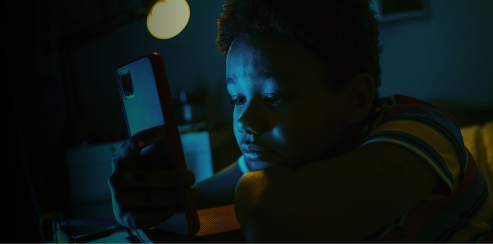

Fadiga visual digital
Olhos secos, ardência, visão embaçada e dores de cabeça podem ser sinais de esforço visual intenso ao encarar telas por muito tempo.

Celulares, computadores e tablets fazem parte da rotina. O problema começa quando o uso excessivo vira hábito automático. Longos períodos em frente às telas podem afetar tanto o corpo quanto a mente.
Aqui, você entende esses impactos e aprende a construir uma rotina digital mais equilibrada.
O excesso de tempo em frente às telas pode gerar consequências físicas e emocionais. Veja alguns dos principais pontos de atenção.
Olhos secos, ardência, visão embaçada e dores de cabeça podem ser sinais de esforço visual intenso ao encarar telas por muito tempo.
Passar horas curvado sobre o celular ou computador sobrecarrega a coluna, ombros e pescoço, favorecendo dores e lesões a longo prazo.
A luz azul das telas à noite pode atrasar o sono, reduzir a qualidade do descanso e impactar diretamente seu humor e foco no dia seguinte.
Informe sua idade e quanto tempo por dia você passa em frente às telas para descobrir se o uso está dentro do recomendado.
Responsável técnico
Aluno do curso Técnico em Desenvolvimento de Sistemas no SENAI Ernesto Ilharco de M. Torres. Tenho interesse em criar soluções digitais que sejam simples, acessíveis e que ajudem as pessoas a se relacionarem com a tecnologia de forma prática e sustentável.
Estudante SENAI | Desenvolvimento de Sistemas | Front-end em formação